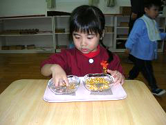
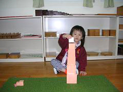
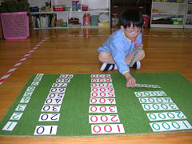
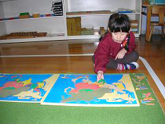
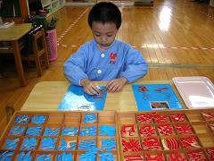
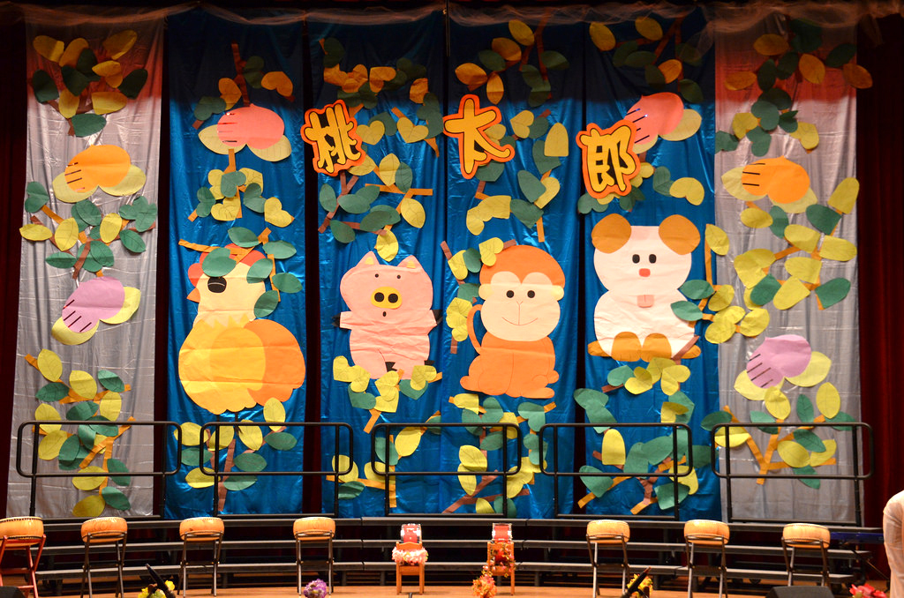

日常生活教育
藉由生活中常見的器具與材料，反覆的操作來建立秩序感，精進手眼協調並幫助孩子培養專注力，
為閱讀、書寫做準備，對自我的紀律與獨立性也有相當的助益，及學會如何照顧自己和環境的人格特質，
期望孩子學習認真、安靜、聚精會神的態度！

五指抓-能增加孩子手指肌肉的控制及培養專注力

操作粉紅塔-能讓孩子學習分辨三度空間的大小
感官教育
包含視覺、觸覺、聽覺、嗅覺、味覺等五大感覺，
舉凡大小、顏色、形狀、質感、重量、溫度、味道、聲音、嗅覺等九種特質，
在培養孩子各種感覺的敏銳度，並為數學中幾何學邏輯思考概念的準備工作，
惟有正確的發展各種感覺，才能幫助幼兒在較高層次的智能發展，
使幼兒們耳聰目明。
數學教育
利用教具、教材教導孩子們透過自己的操作，對一些材料的組合、分割、分配、計數、及比較的過程中，
產生對數學的熱愛和滿足，逐漸培養邏輯思考的基礎。
間接培養對整體文化的吸收、學習，及人格形成時所需要的抽象力、想像力、理解力、判斷力，
而重大目標則是形成完美的人格。

認識 1、10、100、1000數字的符號

地理拼圖是孩子認識大世界的基本材料
文化教育
包含地理、歷史、動物、植物、天文、地質、人文、科學、藝術等，希望孩子藉由各方面的學習，
能激發潛力找尋興趣，讓幼兒不僅關心週遭的事物，擁有世界觀，更了解生態學和宇宙太空奧妙的事；
對古往今來時事、風俗民情有更深的體會，且培養音樂、美術、舞蹈、戲劇等方面的涵養，
為日後奠定重要的基礎！
語文教育
語言是孩子所有學習領域中的基礎，所以閱讀、書寫和口語表達就如同基石般的重要，藉由早期的強調聲音和拼音，
及對文法認知加強訓練。孩子逐漸對於自己的語言感受到一種近乎本能的意識。有了這樣的基礎，
促使孩子有動機繼續閱讀、創作及戲劇演出活動。

拼字的過程，對孩子而言也是「寫字」的一種

接觸各種不同的樂器，開發孩子的旋律感
音樂藝術
每一個孩子需要藉由自己的聲音、雙手、和身體來表達自我。
因此，藝術充滿在我們所有的活動中，在蒙特梭利教學環境裡，孩子藉由其經歷感覺到表達的需要性。
音樂如同語文，孩子綜合學習奧福音樂理論和蒙特梭利的聲音分析樂譜，他們沈醉於音樂的創作與應用，
因而增加了一些社會經驗。